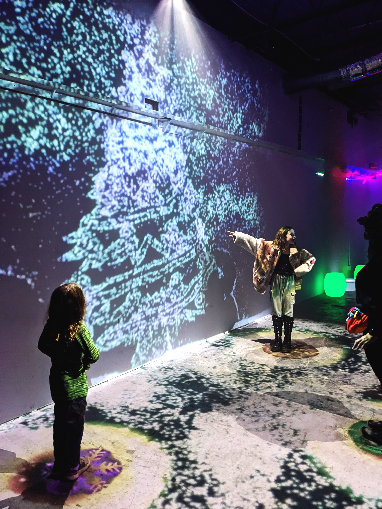
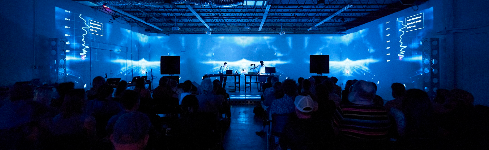
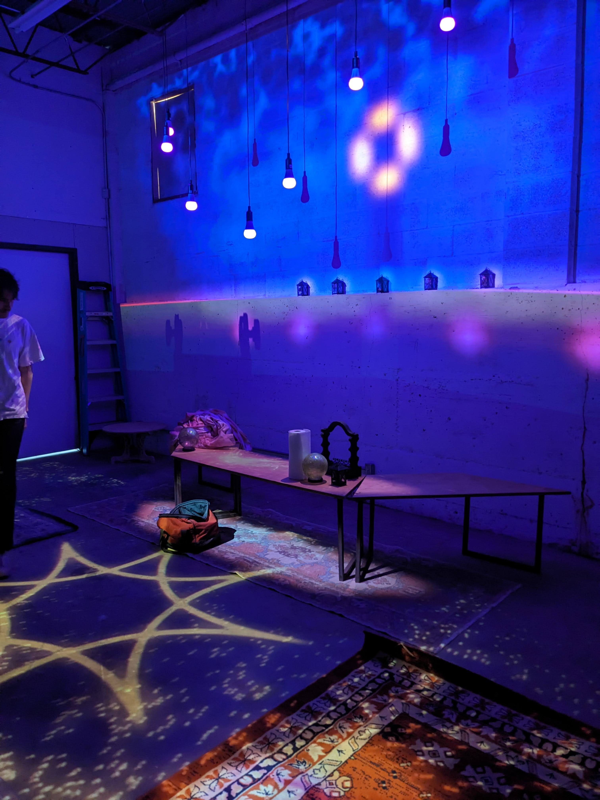
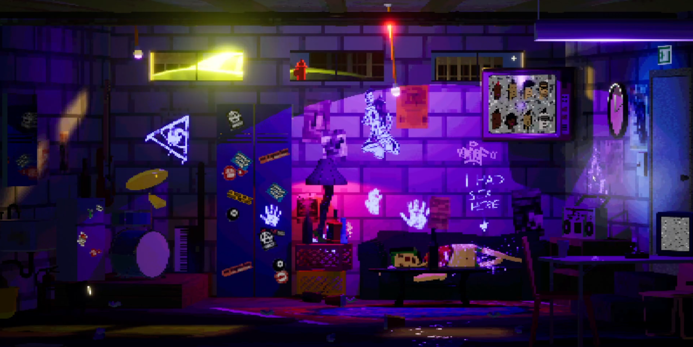

Custom-designed interactive environments that respond to human presence and movement, creating memorable experiences through responsive projection art, sensor-based interactions, and immersive audio-visual elements.
Discuss Your ProjectOur interactive installations transform passive spaces into dynamic environments that engage visitors through multisensory experiences. We blend cutting-edge technology with artistic vision to create memorable, immersive experiences that respond to human movement, sound, touch, and more.
Whether for brand activations, museum exhibitions, public art installations, or private events, our team designs and builds custom interactive systems that invite exploration and create opportunities for meaningful engagement. Each installation is uniquely crafted to fit your space, objectives, and target audience.







We begin with a thorough exploration of your goals, space, and audience to develop interactive concepts that align with your vision and objectives.
Our team designs the technical infrastructure, including sensor systems, projection mapping, audio elements, and the programming that will bring the installation to life.
We create prototypes to test key interactions, refine the user experience, and optimize technical elements before full production.
Our team handles the complete installation process, carefully calibrating all sensors, projections, and interactive elements to ensure a flawless experience.

An immersive installation created for SXSW that transformed a standard event space into a dynamic, interactive forest of light.
View Project
Music visualization for Austin City Limits that created a responsive visual environment that evolved with the performance.
View ProjectCreate lasting impressions that audiences remember and share with others, extending the impact of your event or space.
Increase dwell time and active participation through meaningful interactions that invite exploration and discovery.
Each installation is tailored to your specific space, audience, and objectives, ensuring a perfect fit for your needs.
Our installations can evolve over time, adapt to different events, or respond to changing conditions for extended relevance.
Interactive installations can be designed for virtually any space, from intimate gallery settings to large public areas. The ideal space depends on your objectives, audience, and the type of interaction you want to create. We assess factors like available space, lighting conditions, flow of foot traffic, and technical infrastructure to design an installation that works optimally in your specific environment.
Timeline varies based on complexity, but typical projects range from 6-12 weeks from concept to installation. Simple installations might be completed in as little as 4 weeks, while more complex, custom-built experiences can take 3-4 months. We'll provide a detailed timeline during our initial consultation based on your specific project requirements and deadline constraints.
Yes, we design both temporary installations for events, exhibitions, and activations, as well as permanent installations for museums, corporate spaces, and public venues. Our approach to materials, durability, and maintenance plans will vary based on the intended duration. We also offer options for installations that can be reconfigured or repurposed for different locations or events.
Let's discuss how our interactive installation services can bring your vision to life.